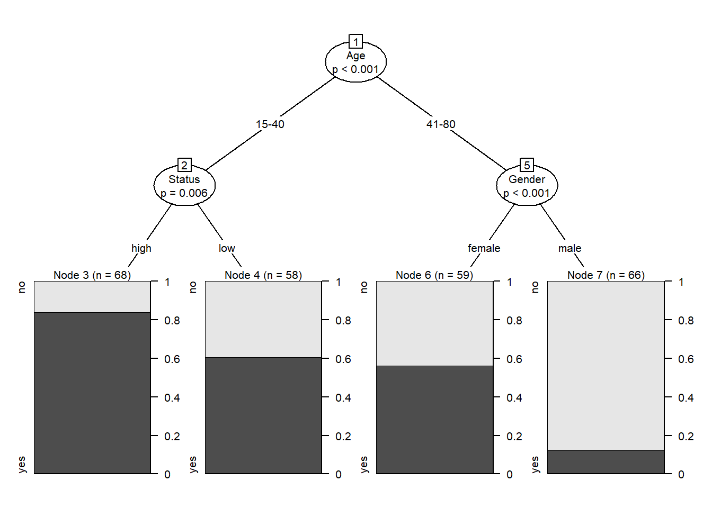
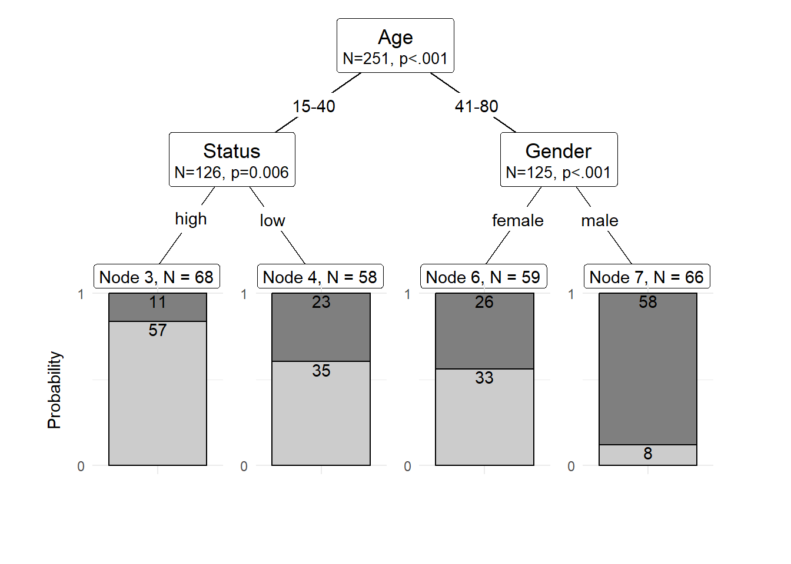
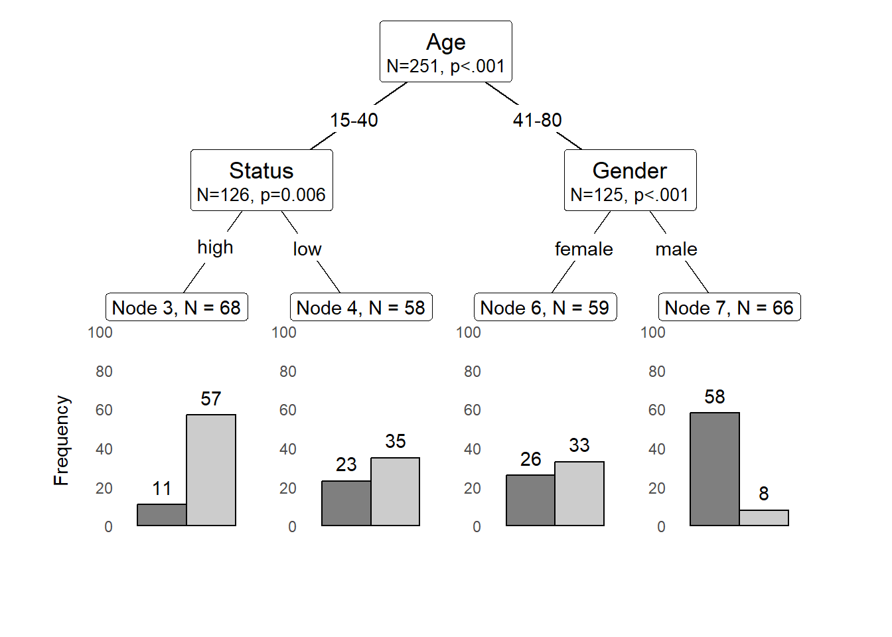

Session 2 What are tree-based models and how do they work?
Classification And Regression Trees
Below is an example of a decision tree which shows what what response to expect - in this case whether a speaker uses discourse like or not. Decision trees, like all CARTs and CITs, answer a simple question, namely How do we best classify elements based on the given predictors?. The answer that decision trees provide is the classification of the elements based on the levels of the predictors. In simple decision trees, all predictors, even those that are not significant are included in the decision tree. The decision tree shows that the best (or most important) predictor for the use of discourse like is age as it is the highest node. Among young speakers, those with high status use like more compared with speakers of lower social status. Among old speakers, women use discourse like more than men.
install.packages("tree")
install.packages("dplyr")
install.packages("grid")
install.packages("flextable")
install.packages("partykit")
install.packages("ggparty")
The yes and no at the bottom show if the speaker should be classified as a user of discourse like (yes or no). Each split can be read as true to the left and false to the right. So that, at the first split, if the person is between the ages of 15 and 40, we need to follow the branch to the left while we need to follow to the right if the person is not 15 to 40.
Before going through how this conditional decision tree is generated, let us first go over some basic concepts. The top of the decision tree is called root or root node, the categories at the end of branches are called leaves or leaf nodes. Nodes that are in-between the root and leaves are called internal nodes or just nodes. The root node has only arrows or lines pointing away from it, internal nodes have lines going to and from them, while leaf nodes only have lines pointing towards them.
How to prune and evaluate the accuracy of decision trees is not shown here. If you are interested in this, please check out chapter 7 of Gries (2021) which is a highly recommendable resource that provide a lot of additional information about decision trees and CARTs.
Tree-Based Models in R
We will now focus on how to implement tree-based models in R and continue with getting a more detaled understanding og how tree-based methods work.
How Tree-Based Methods Work
Let us now go over the process by which the decision tree above is generated. In our example, we want to predict whether a person makes use of discourse like given their age, gender, and social status.
Let us now go over the process by which the decision tree above is generated. In our example, we want to predict whether a person makes use of discourse like given their age, gender, and social status.
In a first step, we load and inspect the data that we will use in this tutorial. As tree-based models require either numeric or factorized data, we factorize the “character” variables in our data.
# load data
citdata <- read.delim("https://slcladal.github.io/data/treedata.txt", header = T, sep = "\t") %>%
dplyr::mutate_if(is.character, factor)Age | Gender | Status | LikeUser |
|---|---|---|---|
15-40 | female | high | no |
15-40 | female | high | no |
15-40 | male | high | no |
41-80 | female | low | yes |
41-80 | male | high | no |
41-80 | male | low | no |
41-80 | female | low | yes |
15-40 | male | high | no |
41-80 | male | low | no |
41-80 | male | low | no |
The data now consists of factors which two levels each.
The first step in generating a decision tree consists in determining, what the root of the decision tree should be. This means that we have to determine which of the variables represents the root node. In order to do so, we tabulate for each variable level, how many speakers of that level have used discourse like (LikeUsers) and how many have not used discourse like (NonLikeUsers).
# tabulate data
table(citdata$LikeUser, citdata$Gender)##
## female male
## no 43 75
## yes 91 42table(citdata$LikeUser, citdata$Age)##
## 15-40 41-80
## no 34 84
## yes 92 41table(citdata$LikeUser, citdata$Status)##
## high low
## no 33 85
## yes 73 60None of the predictors is perfect (the predictors are therefore referred to as impure). To determine which variable is the root, we will calculate the degree of “impurity” for each variable - the variable which has the lowest impurity value will be the root.
The most common measure of impurity in the context of conditional inference trees is called Gini (an alternative that is common when generating regression trees is the deviance). The Gini value or gini index was introduced by Corrado Gini as a measure for income inequality. In our case we seek to maximize inequality of distributions of leave nodes which is why the gini index is useful for tree based models. For each level we apply the following equation to determine the gini impurity value:
\[\begin{equation} G_{x} = 1 - ( p_{1} )^{2} - ( p_{0} )^{2} \end{equation}\]
For the node for men, this would mean the following:
\[\begin{equation} G_{men} = 1-(\frac{42} {42+75})^{2} - (\frac{75} {42+75})^{2} = 0.4602235 \end{equation}\]
For women, we calculate G or Gini as follows:
\[\begin{equation} G_{women} = 1-(\frac{91} {91+43})^{2} - (\frac{43} {91+43})^{2} = 0.4358432 \end{equation}\]
To calculate the Gini value of Gender, we need to calculate the weighted average leaf node impurity (weighted because the number of speakers is different in each group). We calculate the weighted average leaf node impurity using the equation below.
\[\begin{equation} G_{Gender} = \frac{N_{men}} {N_{Total}} \times G_{men} + \frac{N_{women}} {N_{Total}} \times G_{women} G_{Gender} = \frac{159} {303} \times 0.4602235 + \frac{144} {303} \times 0.4358432 = 0.4611915 \end{equation}\]
We will now perform the gini-calculation for gender (see below).
# calculate Gini for men
gini_men <- 1-(42/(42+75))^2 - (75/(42+75))^2
# calculate Gini for women
gini_women <- 1-(91/(91+43))^2 - (43/(91+43))^2
# calculate weighted average of Gini for Gender
gini_gender <- 42/(42+75)* gini_men + 91/(91+43) * gini_women
gini_gender## [1] 0.4611915The gini for gender is 0.4612. In a next step, we revisit the age distribution and we continue to calculate the gini value for age.
# calculate Gini for age groups
gini_young <- 1-(92/(92+34))^2 - (34/(92+34))^2 # Gini: young
gini_old <- 1-(41/(41+84))^2 - (84/(41+84))^2 # Gini: old
# calculate weighted average of Gini for Age
gini_age <- 92/(92+34)* gini_young + 41/(41+84) * gini_old
gini_age## [1] 0.4323148The gini for age is .4323 and we continue by revisiting the status distribution and we continue to calculate the gini value for status.
gini_high <- 1-(73/(33+73))^2 - (33/(33+73))^2 # Gini: high
gini_low <- 1-(60/(60+85))^2 - (85/(60+85))^2 # Gini: low
# calculate weighted average of Gini for Status
gini_status <- 73/(33+73)* gini_high + 60/(60+85) * gini_low
gini_status## [1] 0.4960521The gini for status is .4961 and we can now compare the gini values for age, gender, and status.
# compare age, gender, and status ginis
gini_age; gini_gender; gini_status## [1] 0.4323148## [1] 0.4611915## [1] 0.4960521Since age has the lowest gini (impurity) value, our first split is by age and age, thus, represents our root node. Our manually calculated conditional inference tree right now looks as below.

In a next step, we need to find out which of the remaining variables best separates the speakers who use discourse like from those that do not under the first node. In order to do so, we calculate the Gini values for Gender and SocialStatus for the 15-40 node.
We thus move on and test if and how to split this branch.
# 5TH NODE
# split data according to first split (only young data)
young <- citdata %>%
dplyr::filter(Age == "15-40")
# inspect distribution
tbyounggender <- table(young$LikeUser, young$Gender)
tbyounggender##
## female male
## no 17 17
## yes 58 34# calculate Gini for Gender
# calculate Gini for men
gini_youngmen <- 1-(tbyounggender[2,2]/sum(tbyounggender[,2]))^2 - (tbyounggender[1,2]/sum(tbyounggender[,2]))^2
# calculate Gini for women
gini_youngwomen <- 1-(tbyounggender[2,1]/sum(tbyounggender[,1]))^2 - (tbyounggender[1,1]/sum(tbyounggender[,1]))^2
# # calculate weighted average of Gini for Gender
gini_younggender <- sum(tbyounggender[,2])/sum(tbyounggender)* gini_youngmen + sum(tbyounggender[,1])/sum(tbyounggender) * gini_youngwomen
gini_younggender## [1] 0.3885714The gini value for gender among young speakers is 0.3886.
We continue by inspecting the status distribution.
# calculate Gini for Status
# inspect distribution
tbyoungstatus <- table(young$LikeUser, young$Status)
tbyoungstatus##
## high low
## no 11 23
## yes 57 35We now calculate the gini value for status.
# calculate Gini for status
# calculate Gini for low
gini_younglow <- 1-(tbyoungstatus[2,2]/sum(tbyoungstatus[,2]))^2 - (tbyoungstatus[1,2]/sum(tbyoungstatus[,2]))^2
# calculate Gini for high
gini_younghigh <- 1-(tbyoungstatus[2,1]/sum(tbyoungstatus[,1]))^2 - (tbyoungstatus[1,1]/sum(tbyoungstatus[,1]))^2
# # calculate weighted average of Gini for status
gini_youngstatus <- sum(tbyoungstatus[,2])/sum(tbyoungstatus)* gini_younglow + sum(tbyoungstatus[,1])/sum(tbyoungstatus) * gini_younghigh
gini_youngstatus## [1] 0.3666651Since the gini value for status (0.3667) is lower than the gini value for gender (0.3886), we split by status.
We would continue to calculate the gini values and always split at the lowest gini levels until we reach a leaf node. Then, we would continue doing the same for the remaining branches until the entire data is binned into different leaf nodes.
In addition to plotting the decision tree, we can also check its accuracy. To do so, we predict the use of like based on the decision tree and compare them to the observed uses of like. Then we use the confusionMatrix function from the caret package to get an overview of the accuracy statistics.
dtreeprediction <- as.factor(ifelse(predict(dtree)[,2] > .5, "yes", "no"))
confusionMatrix(dtreeprediction, citdata$LikeUser)The conditional inference tree has an accuracy of 72.9 percent which is significantly better than the base-line accuracy of 53.0 percent (No Information Rate \(*\) 100). To understand what the other statistics refer to and how they are calculated, run the command ?confusionMatrix.
Splitting numeric, ordinal, and true categorical variables
While it is rather straight forward to calculate the Gini values for categorical variables, it may not seem quite as apparent how to calculate splits for numeric or ordinal variables. To illustrate how the algorithm works on such variables, consider the example data set shown below.
Age | LikeUser |
|---|---|
15 | yes |
37 | no |
63 | no |
42 | yes |
22 | yes |
27 | yes |
In a first step, we order the numeric variable so that we arrive at the following table.
Age | LikeUser |
|---|---|
15 | yes |
22 | yes |
27 | yes |
37 | no |
42 | yes |
63 | no |
Next, we calculate the means for each level of “Age”.
Age | LikeUser |
|---|---|
15.0 | yes |
18.5 | |
22.0 | yes |
24.5 | |
27.0 | yes |
32.0 | |
37.0 | no |
39.5 | |
42.0 | yes |
52.5 |
Now, we calculate the Gini values for each average level of age. How this is done is shown below for the first split.
\[\begin{equation} G_{x} = 1 - ( p_{1} )^{2} - ( p_{0} )^{2} \end{equation}\]
For an age smaller than 18.5 this would mean:
\[\begin{equation} G_{youngerthan18.5} = 1-(\frac{1} {1+0})^{2} - (\frac{0} {1+0})^{2} = 0.0 \end{equation}\]
For an age greater than 18.5, we calculate G or Gini as follows:
\[\begin{equation} G_{olerthan18.5} = 1-(\frac{2} {2+3})^{2} - (\frac{3} {2+3})^{2} = 0.48 \end{equation}\]
Now, we calculate the Gini for that split as we have done above.
\[\begin{equation} G_{split18.5} = \frac{N_{youngerthan18.5}} {N_{Total}} \times G_{youngerthan18.5} + \frac{N_{olderthan18.5}} {N_{Total}} \times G_{olderthan18.5} G_{split18.5} = \frac{1} {6} \times 0.0 + \frac{5} {6} \times 0.48 = 0.4 \end{equation}\]
We then have to calculate the gini values for all possible age splits which yields the following results:
# 18.5
1-(1/(1+0))^2 - (0/(1+0))^2
1-(2/(2+3))^2 - (3/(2+3))^2
1/6 * 0.0 + 5/6 * 0.48
# 24.4
1-(2/(2+0))^2 - (0/(2+0))^2
1-(3/(3+1))^2 - (2/(3+1))^2
2/6 * 0.0 + 4/6 * 0.1875
# 32
1-(3/(3+0))^2 - (0/(3+0))^2
1-(1/(1+2))^2 - (2/(1+2))^2
3/6 * 0.0 + 3/6 * 0.4444444
# 39.5
1-(3/(3+1))^2 - (1/(3+1))^2
1-(1/(1+1))^2 - (1/(1+1))^2
4/6 * 0.375 + 2/6 * 0.5
# 52.5
1-(4/(4+1))^2 - (1/(4+1))^2
1-(0/(0+1))^2 - (1/(0+1))^2
5/6 * 0.32 + 1/6 * 0.0AgeSplit | Gini |
|---|---|
18.5 | 0.400 |
24.5 | 0.500 |
32.0 | 0.444 |
39.5 | 0.410 |
52.5 | 0.267 |
The split at 52.5 years of age has the lowest Gini value. Accordingly, we would split the data between speakers who are younger than 52.5 and speakers who are older than 52.5 years of age. The lowest Gini value for any age split would also be the Gini value that would be compared to other variables.
The same procedure that we have used to determine potential splits for a numeric variable would apply to an ordinal variable with only two differences:
- The Gini values are calculated for the actual levels and not the means between variable levels.
- The Gini value is nor calculated for the lowest and highest level as the calculation of the Gini values is impossible for extreme values. Extreme levels can, therefore, not serve as a potential split location.
When dealing with categorical variables with more than two levels, the situation is slightly more complex as we would also have to calculate the Gini values for combinations of variable levels. While the calculations are, in principle, analogous to the ones performed for binary of nominal categorical variables, we would also have to check if combinations would lead to improved splits. For instance, imagine we have a variable with categories A, B, and C. In such cases we would not only have to calculate the Gini scores for A, B, and C but also for A plus B, A plus C, and B plus C. Note that we ignore the combination A plus B plus C as this combination would include all other potential combinations.
2.1 Conditional Inference Trees
Conditional Inference Trees (CITs) are much better at determining the true effect of a predictor, i.e. the effect of a predictor if all other effects are simultaneously considered. In contrast to CARTs, CITs use p-values to determine splits in the data. Below is a conditional inference tree which shows how and what factors contribute to the use of discourse like. In conditional inference trees predictors are only included if the predictor is significant (i.e. if these predictors are necessary).
citdata <- read.delim("https://slcladal.github.io/data/treedata.txt", header = T, sep = "\t")
set.seed(111) # set.seed
# apply bonferroni correction (1 minus alpha multiplied by n of predictors)
control = ctree_control(mincriterion = 1-(.05*ncol(citdata)-1))
# convert character strings to factors
citdata <- citdata %>%
dplyr::mutate_if(is.character, factor)
# create initial conditional inference tree model
citd.ctree <- partykit::ctree(LikeUser ~ Age + Gender + Status,
data = citdata)
plot(citd.ctree, gp = gpar(fontsize = 8)) # plot final ctree
Prettifying your CIT tree
The easiest and most common way to visualize CITs is to simply use the plot function from base R. However, using this function does not allow to adapt and customize the visualization except for some very basic parameters. The ggparty function allows to use the ggplot syntax to customize CITs which allows more adjustments and is more aesthetically pleasing.
To generate this customized CIT, we activate the ggparty package and extract the significant p-values from the CIT object. We then plot the CIT and define the nodes, edges, and text elements as shown below.
# extract p-values
pvals <- unlist(nodeapply(citd.ctree, ids = nodeids(citd.ctree), function(n) info_node(n)$p.value))
pvals <- pvals[pvals <.05]
# plotting
ggparty(citd.ctree) +
geom_edge() +
geom_edge_label() +
geom_node_label(line_list = list(aes(label = splitvar),
aes(label = paste0("N=", nodesize, ", p",
ifelse(pvals < .001, "<.001", paste0("=", round(pvals, 3)))),
size = 10)),
line_gpar = list(list(size = 13),
list(size = 10)),
ids = "inner") +
geom_node_label(aes(label = paste0("Node ", id, ", N = ", nodesize)),
ids = "terminal", nudge_y = -0.0, nudge_x = 0.01) +
geom_node_plot(gglist = list(
geom_bar(aes(x = "", fill = LikeUser),
position = position_fill(), color = "black"),
theme_minimal(),
scale_fill_manual(values = c("gray50", "gray80"), guide = FALSE),
scale_y_continuous(breaks = c(0, 1)),
xlab(""),
ylab("Probability"),
geom_text(aes(x = "", group = LikeUser,
label = stat(count)),
stat = "count", position = position_fill(), vjust = 1.1)),
shared_axis_labels = TRUE)
We can also use position_dodge (instead of position_fill) to display frequencies rather than probabilities as shown below.
# plotting
ggparty(citd.ctree) +
geom_edge() +
geom_edge_label() +
geom_node_label(line_list = list(aes(label = splitvar),
aes(label = paste0("N=", nodesize, ", p",
ifelse(pvals < .001, "<.001", paste0("=", round(pvals, 3)))),
size = 10)),
line_gpar = list(list(size = 13),
list(size = 10)),
ids = "inner") +
geom_node_label(aes(label = paste0("Node ", id, ", N = ", nodesize)),
ids = "terminal", nudge_y = 0.01, nudge_x = 0.01) +
geom_node_plot(gglist = list(
geom_bar(aes(x = "", fill = LikeUser),
position = position_dodge(), color = "black"),
theme_minimal(),
theme(panel.grid.major = element_blank(),
panel.grid.minor = element_blank()),
scale_fill_manual(values = c("gray50", "gray80"), guide = FALSE),
scale_y_continuous(breaks = seq(0, 100, 20),
limits = c(0, 100)),
xlab(""),
ylab("Frequency"),
geom_text(aes(x = "", group = LikeUser,
label = stat(count)),
stat = "count",
position = position_dodge(0.9), vjust = -0.7)),
shared_axis_labels = TRUE)
Problems of Conditional Inference Trees
Like other tree-based methods, CITs are very intuitive, multivariate, non-parametric, they do not require large data sets, and they are easy to implement. Despite these obvious advantages, they have at least one major short coming compared to other, more sophisticated tree-structure models (in addition to the general issues that tree-structure models exhibit as discussed above: they are prone to overfitting which means that they fit the observed data very well but preform much worse when being applied to new data.
An extension which remedies this problem is to use a so-called ensemble method which grows many varied trees. The most common ensemble method is called a Random Forest Analysis and, unfortunately, we cannot deal with random forests here (but if you are interested, check out this tutorial).
Citation & Session Info
Schweinberger, Martin. 2023. An introduction to conditional inference trees in R. Brisbane: The University of Queensland. url: https://github.com/MartinSchweinberger/TreesUBonn/treesubonn.html (Version 2023.01.19).
@manual{schweinberger2023tree,
author = {Schweinberger, Martin},
title = {An introduction to conditional inference trees in R},
note = {https://github.com/MartinSchweinberger/TreesUBonn/treesubonn.html},
year = {2023},
organization = "The University of Queensland, Australia. School of Languages and Cultures},
address = {Brisbane},
edition = {2023.01.19}
}sessionInfo()## R version 4.2.1 RC (2022-06-17 r82510 ucrt)
## Platform: x86_64-w64-mingw32/x64 (64-bit)
## Running under: Windows 10 x64 (build 19045)
##
## Matrix products: default
##
## locale:
## [1] LC_COLLATE=German_Germany.utf8 LC_CTYPE=German_Germany.utf8 LC_MONETARY=German_Germany.utf8
## [4] LC_NUMERIC=C LC_TIME=German_Germany.utf8
##
## attached base packages:
## [1] grid stats graphics grDevices datasets utils methods base
##
## other attached packages:
## [1] ggparty_1.0.0 ggplot2_3.4.0 partykit_1.2-16 mvtnorm_1.1-3 libcoin_1.0-9 Gmisc_3.0.1
## [7] htmlTable_2.4.1 Rcpp_1.0.9 flextable_0.8.3 dplyr_1.0.10 tree_1.0-42
##
## loaded via a namespace (and not attached):
## [1] lubridate_1.9.0 RColorBrewer_1.1-3 tools_4.2.1 backports_1.4.1 bslib_0.4.2
## [6] utf8_1.2.2 R6_2.5.1 rpart_4.1.16 Hmisc_4.7-2 colorspace_2.0-3
## [11] nnet_7.3-17 withr_2.5.0 gridExtra_2.3 tidyselect_1.2.0 curl_5.0.0
## [16] compiler_4.2.1 cli_3.6.0 xml2_1.3.3 officer_0.5.1 labeling_0.4.2
## [21] bookdown_0.31 sass_0.4.4 scales_1.2.1 checkmate_2.1.0 askpass_1.1
## [26] systemfonts_1.0.4 stringr_1.5.0 digest_0.6.31 foreign_0.8-82 rmarkdown_2.19
## [31] gfonts_0.2.0 base64enc_0.1-3 jpeg_0.1-10 pkgconfig_2.0.3 htmltools_0.5.4
## [36] fastmap_1.1.0 highr_0.10 htmlwidgets_1.6.1 rlang_1.0.6 rstudioapi_0.14
## [41] httpcode_0.3.0 shiny_1.7.4 farver_2.1.1 jquerylib_0.1.4 generics_0.1.3
## [46] jsonlite_1.8.4 zip_2.2.2 magrittr_2.0.3 Formula_1.2-4 interp_1.1-3
## [51] Matrix_1.4-1 munsell_0.5.0 fansi_1.0.3 abind_1.4-5 gdtools_0.3.0
## [56] lifecycle_1.0.3 stringi_1.7.12 yaml_2.3.6 inum_1.0-4 promises_1.2.0.1
## [61] crayon_1.5.2 deldir_1.0-6 lattice_0.20-45 splines_4.2.1 knitr_1.41
## [66] pillar_1.8.1 uuid_1.1-0 crul_1.3 XML_3.99-0.13 glue_1.6.2
## [71] evaluate_0.19 latticeExtra_0.6-30 data.table_1.14.6 renv_0.16.0 vctrs_0.5.1
## [76] png_0.1-8 httpuv_1.6.8 gtable_0.3.1 openssl_2.0.5 cachem_1.0.6
## [81] xfun_0.36 mime_0.12 xtable_1.8-4 later_1.3.0 survival_3.3-1
## [86] tibble_3.1.8 forestplot_3.1.1 memoise_2.0.1 cluster_2.1.3 timechange_0.2.0
## [91] ellipsis_0.3.2